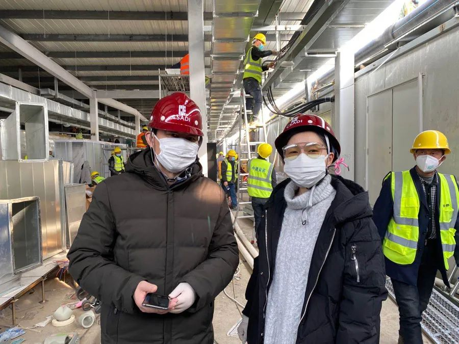

一线医护者故事：没有一个冬天不可逾越
原文链接 备份链接 // “在清水里泡三次，在血水里浴三次，在碱水里煮三次，我们就会纯净得不能再纯净”。 托尔斯泰在《苦难的历程》中如此描述人们从革命走向胜利的艰辛过程，在此时，身处武汉的一线医务工作者又何尝不是经历着清水、碱水甚至血水 …
马婕盈/华中科技大学新闻与信息传播学院
当杨雪涛和他的高中老同学们商量着重录歌曲《手牵手》的时候，大家突然从同学群里得知，同学胡晓芳的一位学妹，已经临危受命，接过了抗击新冠肺炎的一项关键任务——为雷神山医院做规划设计。众人惊讶之余，纷纷点赞。
这位负责设计雷神山医院的“学妹”，就是仇争艳，她是一名来自中南设计建筑院医疗健康事业部的室主任设计师。

仇争艳（左）和施工方一起核对污水处理站旁边一系列机房的位置。受访者供图
1月24日晚上，除夕夜，中南设计院接到了这项紧急任务：25日中午就要向武汉市初步汇报医院设计方案，27日上午就得将雷神山医院的初步施工设计图纸交到承建方手中，27日上午11点，雷神山医院箱式板房首个模块开始施工。设计和施工，按着快进键展开，而留给设计的仅有三天时间。
仇争艳说，这个除夕夜，众人都是紧绷着的，晚上八点半接到通知踏勘场地，十点钟开会讨论，十一点开始设计，第二天中午出设计方案，12小时的时间，自己和同事们要设计出一家能够容纳1500床的大型传染病医院。
过年期间很多技术骨干已经离开武汉，仇争艳所在的医疗健康事业部的领导及两名设计师来到现场。接到任务后，中南建筑设计院不同部门相互配合凑齐了建筑结构、水电、暖通、空调、经济等各专业设计师二三十余人……
“这些天晚上睡觉都想着工地在赶进度，怕漏掉重要电话，早上醒来会第一时间查看电话。每天工作状态就是开着免提，一边打字，一边画图，一边接电话。”仇争艳说，“特别紧张的时候，没有感受到疲惫或者想要去放松，唯一的感受就是时间不够用。”

仇争艳跟技术总师在现场看医技区域施工情况。受访者供图
除夕夜的紧急任务
1月24日晚上吃完饭之后，我和爸妈在一起看春晚，我拿着笔记本电脑聊天，也有一搭没一搭地看着疫情的相关报道。八点半，医疗健康事业部的总监打电话过来通知我去看现场，时间很紧，也没说为什么去看，只说：“我们准备看现场，在江夏，你能不能来。”
他一说去江夏，我就知道肯定是这方面的事情了（建雷神山医院）。23号，中信建筑设计研究总院的同学给我发消息，我知道火神山医院启动了。其实我们这边也在准备，身为医疗建筑设计师，在1月23日武汉宣布封城时，我就开始着手在网上搜索非典时期“小汤山”的设计资料，以备不时之需。
因为没车没法去江夏现场，就决定直接参加十点钟的会议。大家都是临时召集的，我到会议室的时候他们已经踏勘回来了，来到会议室没有交流的时间，直接进入正题。地址是提前选定好的，大家就讨论建设上的技术问题，比如隔离医院的分区、建设规模等。雷神山医院的选址在江夏军运村食堂，原项目是我们公司EPC总承包建设的，我们对这个地块的各方面情况都很熟悉。会后通知，定于1月25日中午向武汉市政府汇报。
开完会之后，有紧张感，但更多的是时间上的顾虑，其实中南院做过上百个医院的项目，技术上还是有信心的，但是放假期间能现场办公的设计师不算多，很多技术骨干不在武汉，我们部门那天参会的设计师只有两个人。
我主要负责项目总体规划，用地分析，建设规模测算等，节点任务是第二天向政府部门汇报方案。所以我首先整理了汇报提纲，做好PPT框架，发给各个专业的相关人员，要求在第二天十点前汇总。
开会的一个小时只是明确了建筑方案的大致方向，还很难确定具体方案。设计的难点就在于，时间紧迫，大家难以充分讨论和思考，必须分工独立解决本专业内的问题，同时还要兼顾彼此，在短时间内拿出可行有效的方案。其实最大的难题还是这个用地相对紧张，难以布置出1500床的病房单元，同时要考虑车辆出入口、风向等因素。我们尝试了几种布局，确定了一两个相对可行的方向。
这种紧迫的项目大家都很安静地投入着，跟平时我们在设计中会反复探讨和争论形成反差，每个人都在争分夺秒，有了统一的目标反而更加高效。
定稿出来了！
25号凌晨两点，我们在尝试论证的过程中逐渐确定了建筑的布局，做好了两种可供选择的规划方案。下午一点半到武汉市政府汇报，政府召集了各个部门，环保局、消防局、规划局等等。我主要是汇报规划方案的大致布局、建设规模，然后请各个部门决策。会议大概有二十人参加，会议室不大，U型的会议桌坐的很紧凑。领导们的效率也挺高，一个小时内会议就形成基本意见，我们立刻返回公司深化设计。
有了基本规划方案，施工方中建三局已经开始施工准备了，他们还没有拿到图纸，只有初步的总平面，就先开始处理场地。我们继续对方案做进一步深化。下一步，就是27号出初步的施工图纸。
设计过程中，方案会存在各种调整和变化。比如医技科室，里面有重症监护室、CT检查、负压手术室，这些东西要配合的内容非常多。在明确该区域的设计图纸后，我就跟建设方做了沟通，需要尽快确定医疗工艺设计及施工单位跟我们配合，这样避免影响该区域的施工进度。还有垃圾处理、污水排放等问题，这不是单纯的设计过程，还牵扯到选材、选设备、用量，所以需要很多单位一起协调才能确定有效实施方案。
深化图纸的过程中，需要多方配合。那段时间我在不停地打各种电话，跟设备厂家和不同分项设计单位联系来确定施工图中的很多细节，每天就是开着免提，一边打字，一边画图，一边讲电话。此外，还有很多线上的视频会议，讲话特别多，我本来就有咽炎，讲得越多咳得越多，所以现在项目结束很久了咳嗽还没好。
1月25号到30号这几天，是设计强度最高的一段时间，吃饭是由单位集中点餐，有盒饭送进来。我也很少回家，就在办公室的小床上睡觉，任务特别紧张的时候，能睡上三四个小时吧，没有时间感受疲惫或者去放松，唯一的感受就是时间过的太快了。
从我家到单位会经过武汉市七院，它是发热门诊的定点医院，医院门口排队的人很多，除夕夜第一次去开会的时候，我专门绕了一下路避开七院。但是之后去单位也不绕路了，只是骑到马路对面，戴上眼镜，多加一层口罩，还是想节省时间。
施工过程中，需要不断和施工方、卫健委、接管的医院汇报沟通，来论证使用流程上的各种细节。医院也给了很多修改意见，所以除了建设方的问题，还要兼顾管理部门和使用部门。图也一直在改，直到31号图纸才基本稳定，不再有大的变动，2月1号我们在办公室做整理和收尾的工作，施工图定稿基本完成了。
从未接触过的挑战
雷神山医院图纸交接之后，2月2日下午我就有时间去工地了，一直到5号第一分区交付，几乎每天都去现场看看，到了天黑四处看不见了才回来。
去工地主要是为了查看施工现场与图纸冲突的地方，以及现场实际实施中的困难，以便对设计做出合理修改。现场是一直有驻场项目管理的，但是很多图纸上的细节问题还是具体设计师更清楚，所以我们到现场解决问题也是非常必要的。
工地基本上是按图施工，但是也会出现一些之前没有考虑到的现实问题。就比如污水处理站，实际的设备埋深特别大，场地操作面有限，导致旁边相应的一系列机房都要改动位置，如消毒加药间、垃圾处理间等。场地有限，每个房子考虑的污染防护间距有一定的要求，所以这块调整的次数非常多，通过一次次现场实测距离，对房子的间距做了合乎规范的调整后，才紧凑地布置了进去。
中南院去年成立医疗健康部，但是我工作十余年里参与设计过很多医院。在大型综合医院里面一般都会规划有传染楼，我们也做过，但是专门的传染病医院每个城市并不会太多。像这次边设计边施工、十天设计到建成的应急医院就仅此一次。
参与建设雷神山医院，刚开始是很激动的，想着可以为武汉的疫情防控做点什么。但是投入之后，担忧却不少：时间紧张，任务量很大，特别是5号验收前，很担忧。
记得我第一个作为专业负责人负责的项目是湖北省中医院，那是我工作的第三年。中标之后，医院各方面的意见很难达成一致，我们前前后后方案做了二三十个，基本上每个星期要出两到三个方案供选择，光方案设计过程就有小半年。
正常的项目建设周期是很长的，省中医院的项目是2010年定的方案，2011年初出的图纸，到了2014年8月份才建成。以往去现场不会特别频繁，汇报方案的时候是每星期去，开始建设后一年去三、四次。常规项目的施工跟雷神山完全不一样，我们给他们一套完整的图纸，基本就是照图施工。很少会像雷神山这样需要根据实际可调配的设备或材料来修改设计。
雷神山建成了
去工地的时候，现场工人很多，24小时不停工，有人在工作，也有人在换班休息。场地里的工人比我们常规去工地的多很多，密密麻麻。工地在很远的两个路口之外就开始限行了，在我们等候接驳车的区域，可以看到全国各地的大卡车等在那里，一辆一辆排着长队，每一辆上面都装满了货物。车上拉着横幅，大致写着哪里援建武汉雷神山医院，很多厂家送来各种设备及物资，集装箱、空调、电视等等。
2月5日要交付验收，雷神山医院总建筑面积约8万平方米，即使是5万平方米的医院，最短的建设时间也要三年。4号的时候施工还在紧张进行，当天下着小雨，很多地方都有积水，整个施工状态是很忙乱的。当天我们把初步验收的区域检查了一遍，其实要整改的地方还是不少的，下雨给工地带来了很多不便，接电接线会出现很多安全隐患，工人们操作起来也十分不便。但是工人们的效率也很高，经过一夜的整改。到了5号完成了局部交付，其他的区域的建设仍在继续。
雷神山有三十多个病区，5号验收的是其中两个区，其他的区域是在之后的几天内陆续完成的。虽然图纸完成，但每天的电话还是很多，建设方那边会一直跟我做沟通和调整，还会有一些媒体的采访和约稿。同事们又要马不停蹄地去做方舱医院的改造，这些任务也很紧急，基本上一两天之内就要完成。
现在工作没有那么紧张了，不过前段时间工作的状态还没有调过来，六点半就会醒。太久的疲惫很难短时间恢复，刚结束雷神山医院设计那段时间，吃完早饭会再睡一下，基本上有任务来的话就要在家办公，然后抓紧一切时间补充睡眠。
雷神山医院已经投入使用，但疫情结束才是精神紧张能够告一段落的时候。我一直认为建筑师是承担一定社会责任的职业，这次参与雷神山项目设计更是让我体会深刻，我们作为医疗建筑设计师虽然没有像医务工作者那样奋斗在一线，但是追求更好更完善的建筑设计可以为病人、医护人员等等每一个忙碌其中的人，带来一份安全与庇护，这也是特别重要的。
（指导老师：华中科技大学新闻与信息传播学院教师 周婷婷；澎湃新闻记者 张小莲 崔烜）
本期编辑 邢潭
推荐阅读


原文链接 备份链接 // “在清水里泡三次，在血水里浴三次，在碱水里煮三次，我们就会纯净得不能再纯净”。 托尔斯泰在《苦难的历程》中如此描述人们从革命走向胜利的艰辛过程，在此时，身处武汉的一线医务工作者又何尝不是经历着清水、碱水甚至血水 …
原文链接 备份链接 说辛苦我们真不觉得，这点辛苦不算什么。我们最难过的是很多时候因为供应商停工停产，汽车零部件紧缺，让我们想修都修不好，耽误了事。到目前为止，我已经记不清出了多少次救援任务了，所有一线防疫人员都是在跟病毒赛跑，我们更不能拖 …
原文链接 备份链接 澎湃新闻记者 陈伊萍 2月14日晚8时许，上海市政工程设计研究总院(集团)有限公司（以下简称“上海市政总院”）接到武汉长江新城建设投资集团有限公司的紧急委托，承担武汉长江新城方舱医院的市政配套设计工作。按照防控部署，上 …
原文链接 备份链接 \ 💪 / *2020年的开头，一场突如其来的疫情让所有行业都笼罩在阴影之下，创意产业也无法幸免。* *工作要么被取消，要么无限延期；每天紧盯确诊人数的变化，似乎也失去了创作的心情……* *疫情之下的你们都还好吗？* …
原文链接 备份链接 曹彦/ 华中科技大学新闻与信息传播学院 伍杨的一身“行头”几乎把整个人都吞了。 臃肿的棉袄外套着白色的防护服，戴着皱起来的蓝色防护手套，头顶是一个半旧棒球帽，只露出染过色的齐肩短发，透明护目镜下是两层叠加的口罩。她站在 …